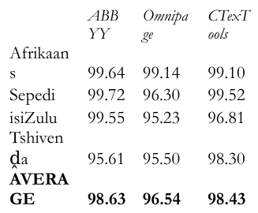

RAIL 2022Tafsiri ya mashine
Kuunda rasilimali za kielektroniki kwa Lugha za Afrika kupitia uwekaji kidijitali: ripoti ya kiufundi
Tafsiri ya mashine, haijakaguliwa na binadamu. Makala asili ndiyo toleo la rejeo; sentensi zilizopigiwa mstari ni zile ambazo ukaguzi wa kiotomatiki haukuwa na uhakika nazo.
Proceedings of the 3rd Workshop on Resources for African Indigenous Languages (RAIL 2022), Journal of the Digital Humanities Association of Southern Africa.
Tafsiri ya Ernst van Gassen (Arktos AI Lab), yenye leseni CC BY-SA 4.0 kama makala asili. Matumizi tena yanaruhusiwa kwa kutaja mwandishi; shiriki marekebisho kwa masharti yale yale. Waandishi asili hawajakagua wala kuidhinisha tafsiri hii.
Maandishi matupu ya kutumia tena, pamoja na leseni yake: Kiswahili · LESENI
Taasisi
Taljard, Elsabé
University of Pretoria
Prinsloo, Danie
University of Pretoria
Goosen, Michelle
University of Pretoria
Anwani za barua pepe zimeondolewa kwa sababu za faragha. Zinapatikana katika PDF asilia.
Muhtasari
Uhitaji wa rasilimali za kielektroniki kwa lugha za Afrika (ambazo hazina rasilimali za kutosha) ni jambo linalotajwa mara kwa mara. Rasilimali hizi zinahitajika kwa utafiti wa lugha kwa ujumla, na hasa zaidi kwa ajili ya ukuzaji wa programu za Teknolojia ya Lugha ya Kibinadamu (HLT) kama vile tafsiri ya mashine, utambuzi wa usemi, kamusi za kielektroniki, vikagua tahajia na sarufi, na utambuzi wa herufi za macho. Teknolojia hizi hutegemea kiasi kikubwa cha data za kielektroniki zenye ubora wa juu. Uwekaji kidijitali ni mojawapo ya mikakati inayoweza kutumika kukusanya data kama hizo. Kwa madhumuni ya karatasi hii, uwekaji kidijitali unaeleweka kama ubadilishaji wa data za maandishi, sauti na video za analogi kuwa umbo la kidijitali, pamoja na utoaji wa data zilizozaliwa kidijitali ambazo kwa sasa hazipatikani katika muundo unaowezesha uchakataji wa hatua zinazofuata. Kuna mtazamo wa jumla kwamba Lugha za Afrika zina uhaba wa rasilimali kuhusiana na zana za kutosha za uwekaji kidijitali ili kufanya kazi kwa ufanisi katika ulimwengu wa kisasa wa kidijitali.
Karatasi yetu inawasilishwa kama ripoti ya kiufundi, ikifafanua zana, taratibu, mbinu bora na viwango vinavyotumiwa na kituo cha uwekaji kidijitali cha UP kuweka kidijitali nyenzo za maandishi, sauti na sauti-video kwa Lugha za Afrika. Juhudi za uwekaji dijiti ni sehemu ya mradi wa South African Digital Languages Resources (SADiLaR) (https://www.sadilar.org/index.php/en/), unaofadhiliwa na Idara ya Sayansi na Ubunifu. Ripoti yetu inategemea hati ya mbinu bora, iliyotengenezwa wakati wa mradi wetu wa uwekaji dijiti na ni sehemu ya matokeo yanayotarajiwa kwa mujibu wa makubaliano ya kimkataba kati ya kituo cha uwekaji dijiti cha UP na Kitovu cha SADiLaR. Mtiririko wa kazi kama unavyoelezwa katika hati hii ulibuniwa kwa kuzingatia mradi huu mahususi; programu na vifaa vilivyotumika pia vilichaguliwa kwa kuzingatia vikwazo kuhusu uwezo na ujuzi wa kiufundi uliopo. Tunatoa sababu za uchaguzi wetu wa programu ya Optical Character Recognition (OCR) kwa kurejelea jaribio la awali ambapo tulitathmini programu tatu za OCR zinazopatikana kibiashara. Hatukujaribu kufanya tathmini kamili ya programu zote za OCR zinazopatikana, bali tulilenga kuchagua moja inayotoa matokeo ya ubora wa juu. Pia tunatafakari kuhusu mojawapo ya changamoto mahususi kwa mradi wetu, yaani, idhini ya hakimiliki. Hili ni muhimu hasa kuhusiana na nyenzo zilizochapishwa. Kwa kukosekana kwa magazeti hasa kwa Lugha za Afrika (isipokuwa mashuhuri ikiwa isiZulu), sehemu kubwa zaidi ya nyenzo za maandishi zinazopatikana kwa uwekaji dijiti inajumuisha nyenzo zilizochapishwa kama vile vitabu vya kiada, riwaya, tamthilia, hadithi fupi na tanzu nyingine za fasihi. Mchakato wa uwekaji kidijitali unaendeshwa na upatikanaji wa nyenzo kwa lugha mbalimbali. Zaidi ya hayo, kupata idhini ya hakimiliki kutoka kwa wachapishaji ni sharti la msingi kwa uwekaji kidijitali na hasa kwa utoaji wa data yoyote ya maandishi iliyowekwa kidijitali kwa matumizi zaidi na / au uchakataji. Kuwa na taarifa kuhusu mtiririko wa kazi wa uwekaji kidijitali wa kiwango kidogo na mbinu bora zinazopatikana kwa urahisi kutawezesha pande nyingine zenye nia kushiriki katika juhudi za uwekaji kidijitali, hivyo kuchangia katika ukusanyaji wa data za kielektroniki kwa Lugha za Afrika.
Maneno Muhimu
uwekaji kidijitali, Utambuzi wa Herufi za Macho (OCR), hakimiliki, metadata, rasilimali za kielektroniki kwa Lugha za Afrika
1 Uwekaji kidijitali wa maandishi
Kwa madhumuni ya uwekaji kidijitali wa maandishi, tunatumia skana tambarare inayobebeka ya Epson DS-50000. Skana za kamera zina matatizo kwa upande wa ubora na uthabiti.
Mara tu rasilimali zitakazowekwa kidijitali zinapotambuliwa, programu ya ABBYY FineReader 14, programu tumizi ya OCR, hutumika kwa mchakato wa uskanaji. Uamuzi wa kutumia programu hii mahususi unatokana na jaribio dogo, lililoripotiwa kwa kina katika Prinsloo, Taljard na Goosen (inayotarajiwa kuchapishwa). Katika jaribio hili, programu mbili za OCR zinazopatikana kibiashara yaani ABBYY FineReader 14 na Omnipage Professional 18, na kifurushi kimoja cha skanning kilichotengenezwa ndani, CTexTools zililinganishwa kwenye machapisho ya ubora mzuri kutoka kwa hotuba ya rais Cyril Ramaphosa ya hali ya taifa (SONA) ya 2020 (https://www.gov.za/ve/speeches/president-cyril-ramaphosa-2020-state-nation-address-13-feb-2020-0000) kwa kurejelea asilimia ya makosa ya skanning na kiwango cha Usahihi kwa jumla. Kiafrikana, isiZulu, Sepedi na Tshivenḓa zilitumika kama lugha za majaribio. Matokeo yetu yalionyesha kuwa ABBYY ingekuwa zana ya OCR inayopendelewa kwa lugha zisizotumia zaidi ya kiwango cha chini cha alama za matamshi, ingawa lugha hizo huenda zisiungwe mkono mahususi na programu hiyo. Kwa Sepedi, kwa mfano, programu haitambui š inayotokea mara kwa mara, lakini kuamilisha Kislovenia kama lugha ya kusahihisha kunasaidia herufi hii. Katika jaribio letu, kiwango cha wastani cha Usahihi kwa vifurushi vitatu ni kama ifuatavyo:

Usahihi wa skanning ya OCR huathiriwa na ubora wa maandishi chanzi. Kasoro kama vile mistari ya maandishi iliyopotoka, picha zilizopinda na kelele zinaweza kupunguza ubora wa utambuzi wa hati iliyoskaniwa. Kihariri cha usindikaji wa awali wa picha kiotomatiki cha ABBYY FineReader kinaweza kuondoa baadhi ya kasoro zinazoweza kutokea katika hati iliyochanganuliwa. Zana za kurekebisha kasoro zinajumuisha (lakini hazikomei kwa) zifuatazo (https://help.abbyy.com/en-us/finereader/15/user_guide/adjustimage/):
- Usindikaji wa awali unaopendekezwa: Programu itaamua kiotomatiki na kutumia marekebisho yanayohitajika. Marekebisho yanayoweza kutumika yanajumuisha uondoaji wa kelele na ukungu, ugeuzaji wa rangi, urekebishaji wa mshazari, unyooshaji wa mistari ya maandishi, marekebisho ya upotoshaji wa trapezoidi na upunguzaji wa kingo za picha.
- Gawa kurasa zinazotazamana: Wakati wa kuchanganua kitabu, picha iliyochanganuliwa kwa kawaida itakuwa na kurasa mbili zinazotazamana. Kurasa zinazotazamana hugawanywa kuwa picha mbili.
- Ondoa mshazari kwenye picha: Hurekebisha picha zilizopinda.
- Nyoosha mistari ya maandishi: Mistari ya maandishi iliyopinda kwenye picha hunyooshwa.
- Sahihisha upotoshaji wa trapezoidi: Husahihisha upotoshaji wa trapezoidi na kuondoa kingo za picha zisizo na taarifa yoyote muhimu.
- Zungusha na geuza: Picha zinaweza kugeuzwa wima au mlalo ili zielekee upande sahihi.
- Punguza: Programu inamruhusu mtumiaji kuchagua ukubwa wa eneo la kuchanganua uliowekwa tayari. Kwa kupunguza hati, mtu huondoa kingo zisizohitajika ambazo hazina taarifa yoyote muhimu.
- Kugeuza: Inageuza picha za rangi. Kazi hiyo ni muhimu wakati wa kushughulikia upakaji rangi wa maandishi usio wa kawaida, kama vile maandishi mepesi kwenye usuli mweusi.
- Azimio: Hubadilisha azimio la picha.
- Mwangaza na utofautishaji: Hubadilisha mwangaza na utofautishaji wa picha.
- Viwango: Viwango vya rangi vya picha vinaweza kurekebishwa kwa kubadilisha ukali wa vivuli, mwanga na nusutoni.
- Kifutio: Hufuta sehemu au sehemu za picha.
- Ondoa alama za rangi: Huondoa mihuri yoyote ya rangi na alama zilizotengenezwa kwa kalamu ili kuwezesha OCR ya maandishi yaliyofichwa na alama hizo.
Mpangilio chaguomsingi ambao maandishi huchanganuliwa ni nukta 300 kwa inchi (dpi). Hii pia ni dpi inayopendekezwa na ABBYY FineReader (https://help.abbyy.com/en-us/finereader/15/user_guide/scangeneral). Katika hali ambapo nyenzo asili ni duni kwa sababu ya umri, dpi inaweza kuongezwa hadi 600 dpi ili kuboresha ubora wa uchanganuzi. Kama chaguomsingi, uchanganuzi kwa 600 dpi hauonekani kuwa unawezekana, kwa kuwa huongeza ukubwa wa faili na muda unaotumika kuchanganua, bila uboreshaji halisi wa ubora wa uchanganuzi wa OCR. Mara tu maandishi yanapochanganuliwa na kihariri cha picha kikitumika kurekebisha kasoro, maandishi yaliyochanganuliwa huhifadhiwa katika umbizo la PDF la picha pekee. Kwa kuhifadhi hati iliyochanganuliwa katika umbizo la PDF lenye picha pekee, hati hiyo haitaweza kutafutwa wala kuwa na tabaka zozote za maandishi. Nakala ya pili ya hati iliyochanganuliwa (iliyohaririwa) hupitishwa kwenye kipengele cha OCR. Inahitaji kuhakikishwa kuwa lugha/lugha sahihi zimechaguliwa ili kuboresha ubora wa OCR. Kwa matokeo bora, hati ya OCR kwanza huhifadhiwa katika umbizo la UTF-8 (faili la .txt). Wakati wa kutumia ABBYY, maandishi yaliyochanganuliwa hayawezi kuhifadhiwa moja kwa moja katika umbizo la Word kwa sababu programu hujaribu kuiga hati asili iliyochanganuliwa. Mtu pia angekumbana na makosa ya uchanganuzi ambayo kwa kiasi kikubwa hayangeonekana katika faili la .txt. Hati zilizochanganuliwa ambazo zimefanyiwa OCR kisha huhifadhiwa katika umbizo la PDF. Kwa mchakato wa kusafisha maandishi na kwa uendeshaji wa vikagua tahajia, faili za .txt hubadilishwa kuwa umbizo la Word.
Madhumuni ya mchakato wa kusafisha ni hasa kusahihisha makosa ya skanning. Kwa kuzingatia kiwango cha ujuzi cha washiriki wa mradi (hawa hasa ni wasaidizi wanafunzi ambao wana lugha ya Kiafrika kama lugha ya kwanza), tulichagua mkakati wa kusafisha maandishi ambao hauhitaji watunzi programu wa kompyuta wenye ujuzi. Tunafahamu taratibu za kisasa zaidi kama vile matumizi ya n-gramu, lakini hizi zinahitaji kiwango cha juu cha ujuzi wa kikompyuta, jambo ambalo linafanya taratibu hizi zisiwe bora kila wakati katika muktadha wa lugha zenye rasilimali chache. Kwa hivyo, tunategemea hasa mchakato wa marekebisho ya mkono kwa msaada wa kifaa cha kusahihisha herufi. Vikagua tahajia vinaongezewa kamusi maalum, kulingana na orodha za maneno zinazozalishwa kutoka kwa korasi zilizokusanywa na nodi ya uwekaji kidijitali ya UP. Baada ya udhibiti wa ubora kufanywa, toleo la mwisho la maandishi yaliyosafishwa linahifadhiwa katika umbizo la UTF-8.
Katika hali za data za kidijitali asilia, hizi kwa kawaida zinapatikana ama katika umbizo la .pdf au MSWord (.doc au .docx). Kwa upande wa nyaraka za PDF, skanning ya OCR inahitaji kufanywa; kwa nyaraka za Word, hizi zinahifadhiwa moja kwa moja katika umbizo la UTF-8. Kwa mara nyingine, ni lazima ihakikishwe kuwa hati ya PDF haipaswi kuwa na safu ya maandishi. Hati ya PDF yenye picha pekee inaruhusu watu binafsi au taasisi nyingine kuitumia kwa madhumuni ya utafiti wa OCR.
2 Mazingatio ya hakimiliki
Kipengele muhimu cha uwekaji maandishi katika mfumo wa kidijitali ni kile cha hakimiliki, hasa wakati wa kufanya kazi na maandishi yaliyochapishwa kama vile vitabu vya kiada, riwaya, tamthilia na aina nyingine za fasihi. Ili kuelewa utata wa hakimiliki kwenye maandishi yaliyowekwa katika mfumo wa kidijitali, ni muhimu kuelewa asili halisi ya maandishi yaliyowekwa katika mfumo wa kidijitali. Kimsingi, uwekaji katika mfumo wa kidijitali ni mchakato wa kubadilisha maandishi yaliyochapishwa kuwa muundo unaosomeka na mashine. Toleo lililowekwa katika mfumo wa kidijitali linahusisha zaidi ya uzalishaji tu, kama inavyodhihirika kutoka kwa utaratibu ulioelezwa hapo juu. Kama ilivyoonyeshwa na Nicholson (2010:10), "inahusisha ubadilishaji hadi muundo mwingine, mara nyingi ukihusisha urekebishaji, ugeuzaji, au upunguzaji, hata tafsiri, inapohitajika". Uwekaji kidijitali kwa uwezekano mkubwa hufanya taarifa zipatikane na kufikiwa na hadhira pana na kwa hiyo unaweza kuchukuliwa kama aina ya (ku)chapisha upya. Kwa kusema kwa ukali, kitendo cha uwekaji kidijitali kwa hiyo kinajumuisha chenyewe kitendo cha ukiukaji wa hakimiliki, isipokuwa kama idhini ya awali imepatikana kutoka kwa mwenye hakimiliki, ambaye katika kesi ya nyenzo zilizochapishwa, ni mchapishaji. Katika mijadala kuhusu hakimiliki dhana ya 'matumizi ya haki' mara nyingi hurejelewa, na wachapishaji wana mwelekeo zaidi wa kutoa idhini ya hakimiliki ikiwa wamesadikishwa kwamba uwekaji kidijitali unalingana na matumizi ya haki. 'Matumizi ya haki' huamuliwa na mambo manne, yaani madhumuni ya matumizi yaliyokusudiwa, asili ya kazi, kiasi au umuhimu uliotumika, na athari za soko (Besek 2003: 5; Senekal na Kotzé 2018: 267). Kuhusiana na jambo la kwanza, tofauti kati ya matumizi ya kibiashara na matumizi kwa madhumuni ya utafiti ni muhimu. Matumizi kwa madhumuni ya kibiashara hayana uwezekano wa kutazamwa kama matumizi ya haki. Pili, ikiwa maandishi ni ya asili ya ukweli, badala ya maandishi ya ubunifu, upeo wa matumizi ya haki kwa ujumla ni mpana zaidi. Tatu, kadiri sehemu inayowekwa kidijitali inavyokuwa ndogo, ndivyo inavyozidi kuwa na uwezekano wa kuchukuliwa kama matumizi ya haki. Mara nyingi inabishaniwa kuwa kuchanganua sehemu ya 10% ya chanzo cha maandishi kunakubalika kama matumizi ya haki. Hata hivyo, wataalamu wa hakimiliki wana haraka kusema kwamba hata ukurasa mmoja kutoka chanzo cha maandishi ambao unawakilisha muundo wa msingi unaweza kuhukumiwa kama ukiukaji wa hakimiliki. Kuamua athari ya kuweka nakala ya kidijitali inayopatikana kwenye soko linalowezekana la maandishi au kazi iliyowekwa kidijitali, kunajumuisha kipengele cha nne. Kama Besek (2003: op cit.) anavyosema, matumizi ambayo yanachukua nafasi ya soko la asili hayana uwezekano wa kustahili kuwa ya haki. Hata hivyo, kuamua kama matumizi ni 'ya haki' kunaonekana katika visa vingi kuwa uamuzi wa kibinafsi na unahitaji kuamuliwa kwa msingi wa kesi kwa kesi.
Kwa maoni yetu hakuna sheria salama za jumla za hakimiliki kwa uchanganuzi wa maandishi isipokuwa ruhusa ya wazi ya mwenye hakimiliki. Kupata hakimiliki kunaweza kurahisishwa kwa kujadili matumizi halisi yaliyokusudiwa ya data. Kwa hiyo, kwa mfano, wachapishaji wanaweza wasikubali kuwekwa kwa maandishi kamili katika mfumo wa kidijitali kwa sababu wanaogopa kwamba data kama hiyo inaweza kuuzwa tena na hivyo kusababisha upotevu wa mapato kwa mmiliki. Wachapishaji wanaweza kuwa na mwelekeo zaidi wa kutoa ruhusa ya matumizi ya data kwa madhumuni ya utafiti au ikiwa data itahifadhiwa tu katika muundo uliochanganywa. Maandishi yanaweza, kwa mfano, kuchanganywa katika kiwango cha aya au kiwango cha sentensi jambo ambalo linamaanisha tu kwamba sentensi na aya hazionekani tena katika mpangilio sawa na maandishi chanzi. Ili kumlinda mtu mmoja au zaidi na/au taasisi moja au zaidi wenye jukumu la uwekaji kidijitali, mkataba ulioandikwa unaoeleza vyanzo halisi na matumizi yanayoruhusiwa ya maandishi ndiyo njia pekee.
3 Uwekaji kidijitali wa nyenzo za sauti / kaseti
Vifaa vinavyotumika kubadilisha nyenzo za sauti ni USB Cassette Capture (kibadilishaji tepu hadi MP3). Kubainisha ubora wa kaseti za sauti ni hatua ya kwanza katika uwekaji kidijitali wa nyenzo za sauti. Uhifadhi usio sahihi, kuharibika kwa sababu ya umri na uharibifu wa kimwili wa kaseti vyote vinaweza kuathiri ubora wa toleo lililowekwa kidijitali. Katika hali ambapo ubora wa rekodi asili si mkamilifu, uamuzi kuhusu umuhimu wa uwekaji kidijitali unapaswa kufanywa, kwa kuzingatia thamani ya asili ya rasilimali.
Audacity (https://www.audacityteam.org/about/), iliyotolewa miaka 20 iliyopita, ni programu huria na inachukuliwa kuwa na ufanisi sawa na programu nyingi za kibiashara za kulipia zenye hadhi ya juu (https://www.techradar.com/reviews/audacity).
Kwa madhumuni ya kuweka kaseti za sauti katika mfumo wa kidijitali, programu hii inamruhusu mtumiaji kuweka rekodi kutoka kwa vyombo vingine vya habari katika mfumo wa kidijitali, kuhariri faili iliyowekwa katika mfumo wa kidijitali, yaani kukata, kunakili, kubandika na kufuta na kuhamisha faili iliyowekwa katika mfumo wa kidijitali hadi kwenye muundo unaotakiwa. Pia ina kipengele cha kupunguza kelele ambacho kinaweza kupunguza sauti za chinichini za mara kwa mara.
Kabla ya kuwekwa katika mfumo wa kidijitali ni lazima kuthibitishwa kama mbinu yoyote ya analogi ya kupunguza kelele ilitumika kwenye tepu iliposimbwa, na kichujio cha usimbuaji kinacholingana, ama katika kikoa cha analogi au cha kidijitali, lazima kitumike katika nakala ya kidijitali ya kaseti ya analogi. Mifano ya mifumo ya kupunguza kelele ni pamoja na Dolby B na Dolby C.
Mipangilio ya ubora chaguomsingi ambayo kaseti ya sauti inawekwa katika mfumo wa kidijitali kupitia Audacity, imewekwa kwenye Hertz 44100 (Hz) na muundo wa biti 32 katika stereo. Muundo wa mwisho ambao kaseti za sauti zilizowekwa katika mfumo wa kidijitali huhifadhiwa ndani yake ni Waveform Audio File Format (WAV). Kabla ya faili zilizowekwa katika mfumo wa kidijitali (faili za .aup) kuhifadhiwa katika muundo uliotajwa, faili za .aup lazima zikaguliwe ili kuhakikisha kwamba mipangilio chaguomsingi ilitumika kwa uwekaji katika mfumo wa kidijitali. Kwa faili zozote za .aup ambazo hazijadijitalishwa kulingana na mipangilio chaguomsingi, mchakato lazima urudiwe. Kelele zozote tuli mwanzoni na/au mwishoni mwa faili iliyodijitalishwa lazima ziondolewe.
4 Udijitalishaji wa nyenzo za video/ kaseti
Changamoto ya kwanza inayoletwa na udijitalishaji wa nyenzo za video ni kupata vichezeshi vya video vya VHS (Video Home Systems) vinavyohitajika kwa uchezaji wa kaseti za video. Kwa kuwa hii ni teknolojia ya zamani, vichezeshi hivi havipatikani kwa urahisi. Vipuri, kama vile mikanda ya kuendesha, pia vinapatikana tu nje ya Afrika Kusini. Programu inayotumika ni Elgato video capture (https://www.elgato.com/en/video-capture) na inachukuliwa kuwa mojawapo ya vifaa bora vya kunasa video (https://www.msn.com/en-us/Lifestyle/rf-buying-guides/best-video-capture-devices-reviews). Ubora wa mwonekano ambao video zinadijitalishwa ni 720x576p (pikseli 720 kwa upana na pikseli 576 kwa urefu). Kiwango cha biti cha video kinachopendekezwa ni Megabiti 5 kwa sekunde (Mbps) na kiwango cha fremu ni fremu 25 kwa sekunde (fps). Kiwango cha biti cha sauti kinachopendekezwa ni Kilobiti 224 kwa sekunde (Kbps) na kiwango cha sampuli ya sauti ni 44 100 Hertz (Hz). Hali ya rangi ni nafasi ya rangi Nyekundu, Kijani na Bluu (RGB). Muundo wa kurekodi ni Diski ya Video Dijitali au Diski Inayobadilika Dijitali (DVD), aina ya video ya kurekodi ni Mstari wa Kupokezana kwa Awamu (PAL) na ubora umewekwa kwenye bora zaidi. Toleo la dijitali limehifadhiwa katika muundo wa .mpg (MPEG2) (kodeki: video ya MPEG-2 (mpgv) / kodeki: safu ya 2 ya sauti ya MPEG (mpga)). MPEG, ambayo inasimamia Kikundi cha Wataalam wa Picha Zinazosonga, ni mgandamizo wa kawaida wa usimbaji wa sauti na video. Ujumbe wa Onyesho la Skrini (OSD) lazima uzimwe na hauwezi kuonekana katika video yoyote ya dijitali. Inahitajika pia kuthibitishwa kuwa mchakato wa uwekaji dijitali unazingatia usimbaji wa analogi wa Dolby B uliotumika katika kiwango cha kurekodi cha VHS.
5 Utoaji wa metadata
Utoaji wa metadata kwa nyenzo yoyote iliyobadilishwa kuwa ya kidijitali ni sehemu ya lazima ya mchakato wa ubadilishaji kuwa wa kidijitali. Burnard (2004) anaeleza metadata kama "aina ya data inayohitajika kueleza nyenzo ya kidijitali kwa undani wa kutosha na kwa Usahihi wa kutosha ili wakala fulani aweze kuamua ikiwa nyenzo hiyo ya kidijitali ina umuhimu kwa uchunguzi fulani". Kuhusu maandishi yaliyobadilishwa kuwa ya kidijitali, metadata inapaswa kwa hakika kuwasilishwa katika muundo uliounganishwa, pamoja na faili ya maandishi, kwa kutumia kanuni zilezile za usimbaji au lugha ya alama inayotumika katika faili ya maandishi yenyewe. Kulingana na Federal Agencies Digital Guidelines Initiative (FAGDI) (https://www.digitizationguidelines.gov/), kuwasilisha metadata katika muundo huu hurahisisha utambuzi, usimamizi, ufikiaji, matumizi na uhifadhi wa nyenzo ya kidijitali. Inasaidia kuhakikisha kwamba maandishi na metadata vinahifadhiwa pamoja na vinaweza kusambazwa kama kitengo kimoja. TEI (Text Encoding Initiative) imekuwa na ushawishi mkubwa katika suala hili, ikichapisha seti pana ya Miongozo ya Usimbaji wa Data Inayosomeka kwa Mashine (TEI P1) (https://tei-c.org/release/doc/tei-p5-doc/en/html/index.html). Mojawapo ya mapendekezo ya TEI ilikuwa ufafanuzi wa kipengele maalum cha metadata, kinachoitwa Kichwa cha TEI. Kichwa hiki hufanya kazi kama aina ya ukurasa wa kichwa wa kielektroniki, kikitoa taarifa kama vile maelezo ya faili, dalili ya asili ya maandishi na maelezo ya kibiblia. Kwa mara nyingine tena, kuwasilisha metadata kwa kila maandishi yaliyodijitaliwa katika muundo huu kunahitaji utaalamu mkubwa wa kikompyuta na tulichagua mbinu rahisi zaidi, ingawa labda ni ya kizamani. Tunatoa maelezo ya kibiblia ya kawaida katika hati tofauti, tukitoa taarifa zifuatazo: kichwa, jina la mwandishi/waandishi, tarehe ya kuchapishwa, ISBN, mchapishaji, aina, maelezo ya aina, lugha (kwa kutumia misimbo ya lugha ya ISO), hali ya hakimiliki, idadi ya kurasa (hati ya PDF), tokeni, aina ya media, usimbaji, muundo / kiendelezi cha faili na jina la hati. Jina la hati ya maandishi lazima liwe na taarifa zifuatazo: lugha, kichwa cha hati, jina la ukoo la mwandishi na aina, kwa mfano zul_Zibukhipha zibuthela_Shabangu_novel. Katika hali ambapo chanzo cha hati ya maandishi ni gazeti au jarida, kichwa cha hati hizo katika seti ya data lazima kiwe na taarifa zifuatazo: lugha, kichwa cha hati, mchapishaji na tarehe, kwa mfano sot_Boleng ba popeho tse fapaneng tsa mebu_Pula Imvula_OCT 2012. Katika hali ambapo hati ina lugha zaidi ya moja, hilo linapaswa kuonyeshwa katika sehemu ya lugha na pia katika jina la hati. Vifupisho vya ISO vya lugha husika lazima viandikwe kwa mfululizo, bila nafasi wala vitenganishi, kwa mfano: nsoengafr_Re bala Sesotho 2_Britz_reader. Alama inayotumika kutenganisha sehemu za data ni mstari wa chini (_).
Taarifa zilizojumuishwa katika orodha za metadata za sauti na video ni: kichwa, mtangazaji, tarehe ya kuchapishwa, mchapishaji, aina, maelezo ya aina, lugha (tazama jedwali 1 hapa chini kwa misimbo ya lugha ya ISO itakayotumika), hali ya hakimiliki, urefu, aina ya media, usimbaji, umbizo / kiendelezi cha faili na jina la hati. Majina ya faili za sauti na video yanapaswa kuwa na taarifa zifuatazo: lugha, kichwa cha faili ya sauti/video, jina la ukoo la mtangazaji na tarehe, kwa mfano afr_AFR 102 verstegniek onderrigkasset 3 kant A_Marais_19990315. Katika hali ambapo faili ina lugha zaidi ya moja, inapaswa kuonyeshwa katika sehemu ya lugha na pia katika jina la hati. Vifupisho vya ISO kwa lugha husika lazima viandikwe mfululizo, bila nafasi au vitenganishi vyovyote, kwa mfano: zuleng_Lesson 4_presenter unknown_date unknown. Alama inayotumika kutenganisha sehemu za data ni mstari wa chini (_).
6 Katika hitimisho
Kutokana na mjadala hapo juu inapaswa kuwa wazi kwamba uwekaji dijitali hasa wa nyenzo za maandishi ni zaidi ya kuchanganua maandishi na kuyahifadhi katika umbizo la PDF. Ili kuhakikisha utumiaji tena wa kiwango cha juu zaidi wa data, ni muhimu sana kwamba (a) data ihifadhiwe katika muundo sahihi, na (b) kwamba itifaki, taratibu na miongozo sahihi ya kiufundi ifuatwe wakati wa mchakato wa uwekaji kidijitali. Mbali na kufanya data zilizowekwa dijitali zipatikane kwa ajili ya usindikaji na matumizi zaidi ya HLT, uwekaji dijitali una kazi ya ziada, yaani uhifadhi wa nyenzo ambazo ni za thamani isiyokadirika na/au zisizoweza kubadilishwa, ambapo katika hali hiyo ubora wa data unaweza kuwa wa kiwango cha chini. Kama kanuni ya jumla, ubora wa nyenzo zilizowekwa dijitali unapaswa kupunguzwa tu katika kesi ya maandishi, sauti na video wakati data ni ya thamani isiyokadirika kwa kiwango ambacho mtumiaji atakuwa tayari kuvumilia ubora wa chini(kidogo) kwa ajili ya umuhimu wa data. Hii ni kwa mfano kesi katika data za zamani sana lakini za thamani kwenye reli za sauti au kanda za video za VHS zilizoharibiwa na unyevu. Katika hali kama hizo notisi lazima iwekwe ikionya watumiaji watarajiwa kuhusu ubora wa chini ili watumiaji wafahamishwe kwamba ubora mbaya si matokeo ya michakato au vifaa vya uwekaji dijitali visivyofikia kiwango. Watumiaji watarajiwa wanaweza kisha kufanya uamuzi wenye ufahamu kuhusu kama wako tayari kufanyia kazi data hizo.
Marejeo
Besek, J.M. 2003. Copyright issues relevant to the creation of a digital archive: A preliminary assessment body. Washington, D.C.: Council on Library and Information Resources.
Burnard, L. 2004. Metadata for corpus work. https://www.academia.edu/3234836/Metadata_for_corpus_work. Last accessed: 25-08-2022.
Liebetrau, P. (ed.). 2010. Managing digital collections: A collaborative initiative on the South African Framework. Pretoria: National Research Foundation. https://help.abbyy.com/en-us/finereader/15/user_guide/adjustimage/. Last accessed: 25-10-2022. If your document image has defects and OCR accuracy is low. https://www.sadilar.org/index.php/en/.Lastaccessed: 12-10-2022. South African Centre for Digital Language Resources. https://www.gov.za/ve/speeches/president-cyril-ramaphosa-2020-state-nation-address-13-feb-2020-0000. Last accessed: 25-10-2022. President Cyril Ramaphosa: 2020 State of the Nation Address.
Nicholson, D. 2010. Copyright and related matters. In Liebetrau (red.) 2010.
Prinsloo, D.J., Taljard, E. and Goosen, M. Optical Character Recognition and text cleaning in the indigenous South African languages. To appear: SpilPlus
Senekal, B. A. and Kotzé, E. 2018. Die ontwikkeling van 'n koste-effektiewe en byderwetse multimedia digitale argief by EPOG in Orania. LitNET Akademies 15(3), 239 - 275.
English na Kiswahili
Creating electronic resources for African languages through digitisation: a technical report
Kuunda rasilimali za kielektroniki kwa Lugha za Afrika kupitia uwekaji kidijitali: ripoti ya kiufundi
Affiliations
Taljard, Elsabé
University of Pretoria
Prinsloo, Danie
University of Pretoria
Goosen, Michelle
University of Pretoria
Taasisi
Taljard, Elsabé
University of Pretoria
Prinsloo, Danie
University of Pretoria
Goosen, Michelle
University of Pretoria
Abstract
Muhtasari
The need for electronic resources for (under-resourced) African languages is an often stated one. These resources are needed for language research in general, and more specifically for the development of Human Language Technology (HLT) applications such as machine translation, speech recognition, electronic dictionaries, spelling and grammar checkers, and optical character recognition. These technologies rely on large quantities of high-quality electronic data. Digitisation is one of the strategies that can be used to collect such data. For the purpose of this paper, digitisation is understood as the conversion of analogue text, audio and video data into digital form, as well as the provision of born digital data that is currently not available in a format that enables downstream processing. There is a general perception that the African languages are under-resourced with regard to sufficient digitisation tools to function effectively in the modern digital world.
Uhitaji wa rasilimali za kielektroniki kwa lugha za Afrika (ambazo hazina rasilimali za kutosha) ni jambo linalotajwa mara kwa mara. Rasilimali hizi zinahitajika kwa utafiti wa lugha kwa ujumla, na hasa zaidi kwa ajili ya ukuzaji wa programu za Teknolojia ya Lugha ya Kibinadamu (HLT) kama vile tafsiri ya mashine, utambuzi wa usemi, kamusi za kielektroniki, vikagua tahajia na sarufi, na utambuzi wa herufi za macho. Teknolojia hizi hutegemea kiasi kikubwa cha data za kielektroniki zenye ubora wa juu. Uwekaji kidijitali ni mojawapo ya mikakati inayoweza kutumika kukusanya data kama hizo. Kwa madhumuni ya karatasi hii, uwekaji kidijitali unaeleweka kama ubadilishaji wa data za maandishi, sauti na video za analogi kuwa umbo la kidijitali, pamoja na utoaji wa data zilizozaliwa kidijitali ambazo kwa sasa hazipatikani katika muundo unaowezesha uchakataji wa hatua zinazofuata. Kuna mtazamo wa jumla kwamba Lugha za Afrika zina uhaba wa rasilimali kuhusiana na zana za kutosha za uwekaji kidijitali ili kufanya kazi kwa ufanisi katika ulimwengu wa kisasa wa kidijitali.
Our paper is presented as a technical report, detailing the tools, procedures, best practices and standards that are utilised by the UP digitisation node to digitise text, audio and audio-visual material for the African languages. The digitisation effort is part of the South African Digital Languages Resources (SADiLaR) project (https://www.sadilar.org/index.php/en/), funded by the Department of Science and Innovation. Our report is based on a best practices document, developed through the course of our digitisation project and forms part of the deliverables as per contractual agreement between the UP digitisation node and the SADiLaR Hub. The workflow as explained in this document was designed with this specific project in mind; software and hardware utilised were also selected based on the constraints with regard to capacity and available technical skills in mind. We motivate our choice of Optical Character Recognition (OCR) software by referring to an earlier experiment in which we evaluated three commercially available OCR programmes. We did not attempt a full-scale evaluation of all available OCR software, but rather focused on selecting one that renders high quality outputs. We also reflect on one of the challenges specific to our project, i.e. copyright clearance. This is particularly relevant with regard to published material. In the absence of newspapers for specifically the African Languages (isiZulu being a notable exception), the biggest portion of textual material available for digitisation consists of printed material such as textbooks, novels, dramas, short stories and other literary genres. The digitisation process is driven by the availability of material for the different languages. Furthermore, obtaining copyright clearance from publishers is a prerequisite for digitisation and especially for the release of any digitised text data for further use and / or processing. Having information on a relatively small-scale digitisation workflow and best practices readily available will enable other interested parties to participate in the digitisation effort, thus contributing to the collection of electronic data for the African languages.
Karatasi yetu inawasilishwa kama ripoti ya kiufundi, ikifafanua zana, taratibu, mbinu bora na viwango vinavyotumiwa na kituo cha uwekaji kidijitali cha UP kuweka kidijitali nyenzo za maandishi, sauti na sauti-video kwa Lugha za Afrika. Juhudi za uwekaji dijiti ni sehemu ya mradi wa South African Digital Languages Resources (SADiLaR) (https://www.sadilar.org/index.php/en/), unaofadhiliwa na Idara ya Sayansi na Ubunifu. Ripoti yetu inategemea hati ya mbinu bora, iliyotengenezwa wakati wa mradi wetu wa uwekaji dijiti na ni sehemu ya matokeo yanayotarajiwa kwa mujibu wa makubaliano ya kimkataba kati ya kituo cha uwekaji dijiti cha UP na Kitovu cha SADiLaR. Mtiririko wa kazi kama unavyoelezwa katika hati hii ulibuniwa kwa kuzingatia mradi huu mahususi; programu na vifaa vilivyotumika pia vilichaguliwa kwa kuzingatia vikwazo kuhusu uwezo na ujuzi wa kiufundi uliopo. Tunatoa sababu za uchaguzi wetu wa programu ya Optical Character Recognition (OCR) kwa kurejelea jaribio la awali ambapo tulitathmini programu tatu za OCR zinazopatikana kibiashara. Hatukujaribu kufanya tathmini kamili ya programu zote za OCR zinazopatikana, bali tulilenga kuchagua moja inayotoa matokeo ya ubora wa juu. Pia tunatafakari kuhusu mojawapo ya changamoto mahususi kwa mradi wetu, yaani, idhini ya hakimiliki. Hili ni muhimu hasa kuhusiana na nyenzo zilizochapishwa. Kwa kukosekana kwa magazeti hasa kwa Lugha za Afrika (isipokuwa mashuhuri ikiwa isiZulu), sehemu kubwa zaidi ya nyenzo za maandishi zinazopatikana kwa uwekaji dijiti inajumuisha nyenzo zilizochapishwa kama vile vitabu vya kiada, riwaya, tamthilia, hadithi fupi na tanzu nyingine za fasihi. Mchakato wa uwekaji kidijitali unaendeshwa na upatikanaji wa nyenzo kwa lugha mbalimbali. Zaidi ya hayo, kupata idhini ya hakimiliki kutoka kwa wachapishaji ni sharti la msingi kwa uwekaji kidijitali na hasa kwa utoaji wa data yoyote ya maandishi iliyowekwa kidijitali kwa matumizi zaidi na / au uchakataji. Kuwa na taarifa kuhusu mtiririko wa kazi wa uwekaji kidijitali wa kiwango kidogo na mbinu bora zinazopatikana kwa urahisi kutawezesha pande nyingine zenye nia kushiriki katika juhudi za uwekaji kidijitali, hivyo kuchangia katika ukusanyaji wa data za kielektroniki kwa Lugha za Afrika.
Keywords
Maneno Muhimu
digitisation, Optical Character Recognition (OCR), copyright, metadata, electronic resoources for African Languages
uwekaji kidijitali, Utambuzi wa Herufi za Macho (OCR), hakimiliki, metadata, rasilimali za kielektroniki kwa Lugha za Afrika
1 Text digitisation
1 Uwekaji kidijitali wa maandishi
For the purpose of text digitisation, we use an Epson DS-50000 portable flatbed scanner. Camera scanners are problematic in terms of quality and consistency.
Kwa madhumuni ya uwekaji kidijitali wa maandishi, tunatumia skana tambarare inayobebeka ya Epson DS-50000. Skana za kamera zina matatizo kwa upande wa ubora na uthabiti.
Once the resources to be digitised have been identified, the software ABBYY FineReader 14, an OCR application, is used for the scanning process. The decision to utilise this particular software programme is informed by a small experiment, reported on in detail in Prinsloo, Taljard and Goosen (to appear). In this experiment, two commercially available OCR programmes i.e. ABBYY FineReader 14 and Omnipage Professional 18, and one locally developed scanning package, CTexTools were compared on good quality printouts from President Cyril Ramaphosa's 2020 state of the nation (SONA) address (https://www.gov.za/ve/speeches/president-cyril-ramaphosa-2020-state-nation-address-13-feb-2020-0000) with reference to percentage of scanning errors and overall accuracy rate. Afrikaans, isiZulu, Sepedi and Tshivenḓa were used as test languages. Our results indicated that ABBYY would be the preferred OCR tool for languages not utilizing more than a minimum of diacritic signs, even though those languages may not be specifically supported by the software. For Sepedi, for example, the software does not recognize the frequently occurring š, but activating Slovenian as the proofing language does support this character. In our experiment, the average accuracy rate for the three packages are as follows:
Mara tu rasilimali zitakazowekwa kidijitali zinapotambuliwa, programu ya ABBYY FineReader 14, programu tumizi ya OCR, hutumika kwa mchakato wa uskanaji. Uamuzi wa kutumia programu hii mahususi unatokana na jaribio dogo, lililoripotiwa kwa kina katika Prinsloo, Taljard na Goosen (inayotarajiwa kuchapishwa). Katika jaribio hili, programu mbili za OCR zinazopatikana kibiashara yaani ABBYY FineReader 14 na Omnipage Professional 18, na kifurushi kimoja cha skanning kilichotengenezwa ndani, CTexTools zililinganishwa kwenye machapisho ya ubora mzuri kutoka kwa hotuba ya rais Cyril Ramaphosa ya hali ya taifa (SONA) ya 2020 (https://www.gov.za/ve/speeches/president-cyril-ramaphosa-2020-state-nation-address-13-feb-2020-0000) kwa kurejelea asilimia ya makosa ya skanning na kiwango cha Usahihi kwa jumla. Kiafrikana, isiZulu, Sepedi na Tshivenḓa zilitumika kama lugha za majaribio. Matokeo yetu yalionyesha kuwa ABBYY ingekuwa zana ya OCR inayopendelewa kwa lugha zisizotumia zaidi ya kiwango cha chini cha alama za matamshi, ingawa lugha hizo huenda zisiungwe mkono mahususi na programu hiyo. Kwa Sepedi, kwa mfano, programu haitambui š inayotokea mara kwa mara, lakini kuamilisha Kislovenia kama lugha ya kusahihisha kunasaidia herufi hii. Katika jaribio letu, kiwango cha wastani cha Usahihi kwa vifurushi vitatu ni kama ifuatavyo:
Accuracy of OCR scanning is affected by the quality of the source text. Defects such as distorted text lines, skewed images and noise can reduce the recognition quality of a scanned document. ABBYY FineReader's automatic image pre-processing editor can remove some of the defects that may occur in a scanned document. The tools for the correction of defects include (but are not limited to) the following (https://help.abbyy.com/en-us/finereader/15/user_guide/adjustimage/):
Usahihi wa skanning ya OCR huathiriwa na ubora wa maandishi chanzi. Kasoro kama vile mistari ya maandishi iliyopotoka, picha zilizopinda na kelele zinaweza kupunguza ubora wa utambuzi wa hati iliyoskaniwa. Kihariri cha usindikaji wa awali wa picha kiotomatiki cha ABBYY FineReader kinaweza kuondoa baadhi ya kasoro zinazoweza kutokea katika hati iliyochanganuliwa. Zana za kurekebisha kasoro zinajumuisha (lakini hazikomei kwa) zifuatazo (https://help.abbyy.com/en-us/finereader/15/user_guide/adjustimage/):
Recommended pre-processing: The software will automatically determine and apply the necessary corrections. The corrections that may be applied include noise and blur removal, colour inversion, skew correction, straightening of text lines, corrections of trapezoid distortion and cropping of image borders.
Usindikaji wa awali unaopendekezwa: Programu itaamua kiotomatiki na kutumia marekebisho yanayohitajika. Marekebisho yanayoweza kutumika yanajumuisha uondoaji wa kelele na ukungu, ugeuzaji wa rangi, urekebishaji wa mshazari, unyooshaji wa mistari ya maandishi, marekebisho ya upotoshaji wa trapezoidi na upunguzaji wa kingo za picha.
Split facing pages: When scanning a book, a scanned image will usually contain two facing pages. Facing pages are split into two images.
Gawa kurasa zinazotazamana: Wakati wa kuchanganua kitabu, picha iliyochanganuliwa kwa kawaida itakuwa na kurasa mbili zinazotazamana. Kurasa zinazotazamana hugawanywa kuwa picha mbili.
Deskew images: Corrects skewed images.
Ondoa mshazari kwenye picha: Hurekebisha picha zilizopinda.
Straighten text lines: Curved text lines on images are straightened.
Nyoosha mistari ya maandishi: Mistari ya maandishi iliyopinda kwenye picha hunyooshwa.
Correct trapezoid distortion: Corrects trapezoid distortions and removes image edges not containing any useful information.
Sahihisha upotoshaji wa trapezoidi: Husahihisha upotoshaji wa trapezoidi na kuondoa kingo za picha zisizo na taarifa yoyote muhimu.
Rotate and flip: Images can be flipped vertically or horizontally to get them facing the right direction.
Zungusha na geuza: Picha zinaweza kugeuzwa wima au mlalo ili zielekee upande sahihi.
Crop: The software allows the user to select a pre-set scanning area size. By cropping a document, one removes unwanted edges that do not contain any useful information.
Punguza: Programu inamruhusu mtumiaji kuchagua ukubwa wa eneo la kuchanganua uliowekwa tayari. Kwa kupunguza hati, mtu huondoa kingo zisizohitajika ambazo hazina taarifa yoyote muhimu.
Invert: Inverts colour images. The function is useful when dealing with non-standard text colouring, such as light text on a dark background.
Kugeuza: Inageuza picha za rangi. Kazi hiyo ni muhimu wakati wa kushughulikia upakaji rangi wa maandishi usio wa kawaida, kama vile maandishi mepesi kwenye usuli mweusi.
Resolution: Changes the resolution of an image.
Azimio: Hubadilisha azimio la picha.
Brightness and contrast: Changes the brightness and contrast of an image.
Mwangaza na utofautishaji: Hubadilisha mwangaza na utofautishaji wa picha.
Levels: The colour levels of the images can be adjusted by changing the intensity of shadows, light and halftones.
Viwango: Viwango vya rangi vya picha vinaweza kurekebishwa kwa kubadilisha ukali wa vivuli, mwanga na nusutoni.
Eraser: Erases a part or parts of images.
Kifutio: Hufuta sehemu au sehemu za picha.
Remove colour marks: Removes any colour stamps and marks made in pen to facilitate the OCR of the text hidden by such marks.
Ondoa alama za rangi: Huondoa mihuri yoyote ya rangi na alama zilizotengenezwa kwa kalamu ili kuwezesha OCR ya maandishi yaliyofichwa na alama hizo.
The default setting at which texts are scanned is 300 dots per inch (dpi). This is also the dpi recommended by ABBYY FineReader (https://help.abbyy.com/en-us/finereader/15/user_guide/scangeneral). In cases where the original material is poor because of age, the dpi may be increased to 600 dpi to enhance the scanning quality. As a default, scanning at 600 dpi does not seem to be feasible, since it increases the file size and the time spent on scanning, with no real improvement of the OCR scanning quality. Once a text has been scanned and the image editor used to correct defects, the scanned text is saved in an image-only PDF format. By saving the scanned document in an image-only PDF format, the document will not be searchable or contain any text layers. A second copy of the (edited) scanned document is put through the OCR function. It must be ensured that the correct language/languages are selected to enhance the OCR quality. For best results, the OCR document is first saved in UTF-8 format (a .txt file). When using ABBYY, the scanned text cannot be directly saved in Word format as the software attempts to replicate the orginal scanned document. One would also encounter scanning errors which would most likely not appear in the .txt file. Scanned documents that have been OCR'ed are then saved in PDF format. For the text cleaning process and for the running of spell checkers, the .txt files are converted to Word format.
Mpangilio chaguomsingi ambao maandishi huchanganuliwa ni nukta 300 kwa inchi (dpi). Hii pia ni dpi inayopendekezwa na ABBYY FineReader (https://help.abbyy.com/en-us/finereader/15/user_guide/scangeneral). Katika hali ambapo nyenzo asili ni duni kwa sababu ya umri, dpi inaweza kuongezwa hadi 600 dpi ili kuboresha ubora wa uchanganuzi. Kama chaguomsingi, uchanganuzi kwa 600 dpi hauonekani kuwa unawezekana, kwa kuwa huongeza ukubwa wa faili na muda unaotumika kuchanganua, bila uboreshaji halisi wa ubora wa uchanganuzi wa OCR. Mara tu maandishi yanapochanganuliwa na kihariri cha picha kikitumika kurekebisha kasoro, maandishi yaliyochanganuliwa huhifadhiwa katika umbizo la PDF la picha pekee. Kwa kuhifadhi hati iliyochanganuliwa katika umbizo la PDF lenye picha pekee, hati hiyo haitaweza kutafutwa wala kuwa na tabaka zozote za maandishi. Nakala ya pili ya hati iliyochanganuliwa (iliyohaririwa) hupitishwa kwenye kipengele cha OCR. Inahitaji kuhakikishwa kuwa lugha/lugha sahihi zimechaguliwa ili kuboresha ubora wa OCR. Kwa matokeo bora, hati ya OCR kwanza huhifadhiwa katika umbizo la UTF-8 (faili la .txt). Wakati wa kutumia ABBYY, maandishi yaliyochanganuliwa hayawezi kuhifadhiwa moja kwa moja katika umbizo la Word kwa sababu programu hujaribu kuiga hati asili iliyochanganuliwa. Mtu pia angekumbana na makosa ya uchanganuzi ambayo kwa kiasi kikubwa hayangeonekana katika faili la .txt. Hati zilizochanganuliwa ambazo zimefanyiwa OCR kisha huhifadhiwa katika umbizo la PDF. Kwa mchakato wa kusafisha maandishi na kwa uendeshaji wa vikagua tahajia, faili za .txt hubadilishwa kuwa umbizo la Word.
The purpose of the cleaning process is mainly to correct scanning errors. Taking the skills level of project participants into consideration (these are mainly student assistants who have an African language as first language), we opted for a text cleaning strategy that does not need skilled computer programmers. We are aware of more sophisticated procedures such as the use of N-grams, but these require a high level of computational skill, which makes these procedures not always ideal within the context of lesser-resourced languages. We therefore rely mostly on a process of manual correction with spellchecker support. Spellcheckers are supplemented with custom dictionaries, based on word lists generated from corpora compiled by the UP digitisation node. After quality control has been carried out, the final version of the cleaned texts is stored in UTF-8 format.
Madhumuni ya mchakato wa kusafisha ni hasa kusahihisha makosa ya skanning. Kwa kuzingatia kiwango cha ujuzi cha washiriki wa mradi (hawa hasa ni wasaidizi wanafunzi ambao wana lugha ya Kiafrika kama lugha ya kwanza), tulichagua mkakati wa kusafisha maandishi ambao hauhitaji watunzi programu wa kompyuta wenye ujuzi. Tunafahamu taratibu za kisasa zaidi kama vile matumizi ya n-gramu, lakini hizi zinahitaji kiwango cha juu cha ujuzi wa kikompyuta, jambo ambalo linafanya taratibu hizi zisiwe bora kila wakati katika muktadha wa lugha zenye rasilimali chache. Kwa hivyo, tunategemea hasa mchakato wa marekebisho ya mkono kwa msaada wa kifaa cha kusahihisha herufi. Vikagua tahajia vinaongezewa kamusi maalum, kulingana na orodha za maneno zinazozalishwa kutoka kwa korasi zilizokusanywa na nodi ya uwekaji kidijitali ya UP. Baada ya udhibiti wa ubora kufanywa, toleo la mwisho la maandishi yaliyosafishwa linahifadhiwa katika umbizo la UTF-8.
In cases of born digital data, these are usually available either in .pdf or MSWord (.doc or .docx) format. In case of PDF documents, OCR scanning needs to be carried out; for Word documents, these are directly saved in UTF-8 format. Once again, it must be ensured that the PDF document should not contain a text layer. An image only PDF document allows other individuals or institutions to utilise it for the purposes of OCR research.
Katika hali za data za kidijitali asilia, hizi kwa kawaida zinapatikana ama katika umbizo la .pdf au MSWord (.doc au .docx). Kwa upande wa nyaraka za PDF, skanning ya OCR inahitaji kufanywa; kwa nyaraka za Word, hizi zinahifadhiwa moja kwa moja katika umbizo la UTF-8. Kwa mara nyingine, ni lazima ihakikishwe kuwa hati ya PDF haipaswi kuwa na safu ya maandishi. Hati ya PDF yenye picha pekee inaruhusu watu binafsi au taasisi nyingine kuitumia kwa madhumuni ya utafiti wa OCR.
2 Copyright considerations
2 Mazingatio ya hakimiliki
A salient aspect of text digitisation is that of copyright, especially when working with published texts such as text books, novels, dramas and other literary genres. In order to understand the complexities of copyright on digitised texts, it is important to understand the exact nature of a digitised text. In essence, digitisation is a process of converting printed texts into a machine-readable format. A digitised version involves more than a mere reproduction, as is evident from the procedure described above. As pointed out by Nicholson (2010:10), "it involves the conversion to another format, often involving modification, adaptation, or cropping, even translation, where necessary " . Digitisation potentially makes information available and accessible to a wide audience and can therefore be regarded as a form of (re)publishing. Strictly speaking, the act of digitisation therefore constitutes in itself an act of infringement of copyright, unless prior clearance has been obtained from the copyright holder, which in the case of published material, is the publisher. In discussions on copyright the notion of 'fair use' is often referred to, and publishers are more inclined to provide copyright clearance if they are convinced that digitisation amounts to fair use. 'Fair use' is determined by four factors, i.e. the purpose of the intended use, the nature of the work, the amount or substantiality used, and market impact (Besek 2003: 5; Senekal and Kotzé 2018: 267). With regard to the first factor, the distinction between commercial use and use for research purposes is relevant. Use for commercial purposes is unlikely to be viewed as fair use. Secondly, if a text is of a factual nature, rather than a creative text, the scope of fair use is generally broader. Thirdly, the smaller the portion that is digitised, the more likely it is to be regarded as fair use. It is often argued that scanning a 10% section of a text source is acceptable as fair use. However, copyright experts are quick to point out that even a single page from a text source which represent a core design can be judged as copyright infringement. Determining the effect of making a digital copy available on the potential market for the digitised text or work, constitutes the fourth factor. As Besek (2003: op cit.) points out, use that supplants the market for the original is unlikely to qualify as fair. However, deciding on whether use is 'fair' seems in many cases a subjective decision and needs to be determined on a case by case basis.
Kipengele muhimu cha uwekaji maandishi katika mfumo wa kidijitali ni kile cha hakimiliki, hasa wakati wa kufanya kazi na maandishi yaliyochapishwa kama vile vitabu vya kiada, riwaya, tamthilia na aina nyingine za fasihi. Ili kuelewa utata wa hakimiliki kwenye maandishi yaliyowekwa katika mfumo wa kidijitali, ni muhimu kuelewa asili halisi ya maandishi yaliyowekwa katika mfumo wa kidijitali. Kimsingi, uwekaji katika mfumo wa kidijitali ni mchakato wa kubadilisha maandishi yaliyochapishwa kuwa muundo unaosomeka na mashine. Toleo lililowekwa katika mfumo wa kidijitali linahusisha zaidi ya uzalishaji tu, kama inavyodhihirika kutoka kwa utaratibu ulioelezwa hapo juu. Kama ilivyoonyeshwa na Nicholson (2010:10), "inahusisha ubadilishaji hadi muundo mwingine, mara nyingi ukihusisha urekebishaji, ugeuzaji, au upunguzaji, hata tafsiri, inapohitajika". Uwekaji kidijitali kwa uwezekano mkubwa hufanya taarifa zipatikane na kufikiwa na hadhira pana na kwa hiyo unaweza kuchukuliwa kama aina ya (ku)chapisha upya. Kwa kusema kwa ukali, kitendo cha uwekaji kidijitali kwa hiyo kinajumuisha chenyewe kitendo cha ukiukaji wa hakimiliki, isipokuwa kama idhini ya awali imepatikana kutoka kwa mwenye hakimiliki, ambaye katika kesi ya nyenzo zilizochapishwa, ni mchapishaji. Katika mijadala kuhusu hakimiliki dhana ya 'matumizi ya haki' mara nyingi hurejelewa, na wachapishaji wana mwelekeo zaidi wa kutoa idhini ya hakimiliki ikiwa wamesadikishwa kwamba uwekaji kidijitali unalingana na matumizi ya haki. 'Matumizi ya haki' huamuliwa na mambo manne, yaani madhumuni ya matumizi yaliyokusudiwa, asili ya kazi, kiasi au umuhimu uliotumika, na athari za soko (Besek 2003: 5; Senekal na Kotzé 2018: 267). Kuhusiana na jambo la kwanza, tofauti kati ya matumizi ya kibiashara na matumizi kwa madhumuni ya utafiti ni muhimu. Matumizi kwa madhumuni ya kibiashara hayana uwezekano wa kutazamwa kama matumizi ya haki. Pili, ikiwa maandishi ni ya asili ya ukweli, badala ya maandishi ya ubunifu, upeo wa matumizi ya haki kwa ujumla ni mpana zaidi. Tatu, kadiri sehemu inayowekwa kidijitali inavyokuwa ndogo, ndivyo inavyozidi kuwa na uwezekano wa kuchukuliwa kama matumizi ya haki. Mara nyingi inabishaniwa kuwa kuchanganua sehemu ya 10% ya chanzo cha maandishi kunakubalika kama matumizi ya haki. Hata hivyo, wataalamu wa hakimiliki wana haraka kusema kwamba hata ukurasa mmoja kutoka chanzo cha maandishi ambao unawakilisha muundo wa msingi unaweza kuhukumiwa kama ukiukaji wa hakimiliki. Kuamua athari ya kuweka nakala ya kidijitali inayopatikana kwenye soko linalowezekana la maandishi au kazi iliyowekwa kidijitali, kunajumuisha kipengele cha nne. Kama Besek (2003: op cit.) anavyosema, matumizi ambayo yanachukua nafasi ya soko la asili hayana uwezekano wa kustahili kuwa ya haki. Hata hivyo, kuamua kama matumizi ni 'ya haki' kunaonekana katika visa vingi kuwa uamuzi wa kibinafsi na unahitaji kuamuliwa kwa msingi wa kesi kwa kesi.
In our opinion there are no safe generic copyright rules for text scanning except for explicit permission of the copyright owner. Obtaining copyright can be simplified by negotiating the exact intended use of the data. So, for example, publishers might not agree to the digitisation of full texts as they fear that such data could be resold and consequently will lead to loss of income for the owner. Publishers might be more inclined to give permission to the use of data for research purposes or if the data will only be stored in scrambled format. Texts can, for instance, be scrambled on paragraph or sentence level which simply means that sentences and paragraphs no longer appear in the same order as the source texts. In order to safeguard the person(s) and / or institution(s) responsible for digitisation, a written contract stating the exact sources and the permitted utilization of the texts is the only option.
Kwa maoni yetu hakuna sheria salama za jumla za hakimiliki kwa uchanganuzi wa maandishi isipokuwa ruhusa ya wazi ya mwenye hakimiliki. Kupata hakimiliki kunaweza kurahisishwa kwa kujadili matumizi halisi yaliyokusudiwa ya data. Kwa hiyo, kwa mfano, wachapishaji wanaweza wasikubali kuwekwa kwa maandishi kamili katika mfumo wa kidijitali kwa sababu wanaogopa kwamba data kama hiyo inaweza kuuzwa tena na hivyo kusababisha upotevu wa mapato kwa mmiliki. Wachapishaji wanaweza kuwa na mwelekeo zaidi wa kutoa ruhusa ya matumizi ya data kwa madhumuni ya utafiti au ikiwa data itahifadhiwa tu katika muundo uliochanganywa. Maandishi yanaweza, kwa mfano, kuchanganywa katika kiwango cha aya au kiwango cha sentensi jambo ambalo linamaanisha tu kwamba sentensi na aya hazionekani tena katika mpangilio sawa na maandishi chanzi. Ili kumlinda mtu mmoja au zaidi na/au taasisi moja au zaidi wenye jukumu la uwekaji kidijitali, mkataba ulioandikwa unaoeleza vyanzo halisi na matumizi yanayoruhusiwa ya maandishi ndiyo njia pekee.
3 Digitisation of audio material / cassettes
3 Uwekaji kidijitali wa nyenzo za sauti / kaseti
The hardware used for converting audio material is USB Cassette Capture (tape to MP3 converter). Determining the quality of audio cassettes is the first step in the digitisation of audio material. Incorrect storage, deterioration because of age and physical damage to cassettes can all affect the quality of the digitised version. In cases where the quality of the original recording is less than perfect, a decision as to the usefulness of digitisation should be taken, based on the inherent value of the resource.
Vifaa vinavyotumika kubadilisha nyenzo za sauti ni USB Cassette Capture (kibadilishaji tepu hadi MP3). Kubainisha ubora wa kaseti za sauti ni hatua ya kwanza katika uwekaji kidijitali wa nyenzo za sauti. Uhifadhi usio sahihi, kuharibika kwa sababu ya umri na uharibifu wa kimwili wa kaseti vyote vinaweza kuathiri ubora wa toleo lililowekwa kidijitali. Katika hali ambapo ubora wa rekodi asili si mkamilifu, uamuzi kuhusu umuhimu wa uwekaji kidijitali unapaswa kufanywa, kwa kuzingatia thamani ya asili ya rasilimali.
Audacity (https://www.audacityteam.org/about/), released 20 years ago, is open source software and is regarded as being as effective as many premium paid-for applications (https://www.techradar.com/reviews/audacity).
Audacity (https://www.audacityteam.org/about/), iliyotolewa miaka 20 iliyopita, ni programu huria na inachukuliwa kuwa na ufanisi sawa na programu nyingi za kibiashara za kulipia zenye hadhi ya juu (https://www.techradar.com/reviews/audacity).
For the purpose of the digitisation of audio cassettes, the software allows the user to digitise recordings from other media, edit the digitised file, i.e. cut, copy, paste and delete and export the digitised file to the desired format. It also has a noise reduction function that can reduce constant background sounds.
Kwa madhumuni ya kuweka kaseti za sauti katika mfumo wa kidijitali, programu hii inamruhusu mtumiaji kuweka rekodi kutoka kwa vyombo vingine vya habari katika mfumo wa kidijitali, kuhariri faili iliyowekwa katika mfumo wa kidijitali, yaani kukata, kunakili, kubandika na kufuta na kuhamisha faili iliyowekwa katika mfumo wa kidijitali hadi kwenye muundo unaotakiwa. Pia ina kipengele cha kupunguza kelele ambacho kinaweza kupunguza sauti za chinichini za mara kwa mara.
Prior to digitisation it must be ascertained whether any analogue noise reduction technique was applied to the tape when it was encoded, and the corresponding decoding filter, either in the analogue or digital domain, must be applied in the digitised copy of the analogue cassette. Examples of noise reduction systems include Dolby B and Dolby C.
Kabla ya kuwekwa katika mfumo wa kidijitali ni lazima kuthibitishwa kama mbinu yoyote ya analogi ya kupunguza kelele ilitumika kwenye tepu iliposimbwa, na kichujio cha usimbuaji kinacholingana, ama katika kikoa cha analogi au cha kidijitali, lazima kitumike katika nakala ya kidijitali ya kaseti ya analogi. Mifano ya mifumo ya kupunguza kelele ni pamoja na Dolby B na Dolby C.
The default quality settings at which an audio cassette is being digitised through Audacity, is set at 44100 Hertz (Hz) and 32-bit format in stereo. The final format in which the digitised audio cassettes is stored in is Waveform Audio File Format (WAV). Before the digitised files (.aup files) are stored in said format, the .aup files must be checked to ensure that the default settings were used for digitisation. For any .aup files not digitised according to the default settings, the process must be repeated. Any static at the beginning and/or end of a digitised file must be removed.
Mipangilio ya ubora chaguomsingi ambayo kaseti ya sauti inawekwa katika mfumo wa kidijitali kupitia Audacity, imewekwa kwenye Hertz 44100 (Hz) na muundo wa biti 32 katika stereo. Muundo wa mwisho ambao kaseti za sauti zilizowekwa katika mfumo wa kidijitali huhifadhiwa ndani yake ni Waveform Audio File Format (WAV). Kabla ya faili zilizowekwa katika mfumo wa kidijitali (faili za .aup) kuhifadhiwa katika muundo uliotajwa, faili za .aup lazima zikaguliwe ili kuhakikisha kwamba mipangilio chaguomsingi ilitumika kwa uwekaji katika mfumo wa kidijitali. Kwa faili zozote za .aup ambazo hazijadijitalishwa kulingana na mipangilio chaguomsingi, mchakato lazima urudiwe. Kelele zozote tuli mwanzoni na/au mwishoni mwa faili iliyodijitalishwa lazima ziondolewe.
4 Digitisation of video material/ cassettes
4 Udijitalishaji wa nyenzo za video/ kaseti
The first challenge posed by the digitisation of video material is finding VHS (Video Home Systems) video players needed for playing of video cassettes. Since this is old technology, these players are not readily available. Spare parts, such as drive belts are also only available outside of South Africa. The software used is Elgato video capture (https://www.elgato.com/en/video-capture) and is regarded as one of the best video capture devices (https://www.msn.com/en-us/Lifestyle/rf-buying-guides/best-video-capture-devices-reviews). The resolution at which videos are digitised, is 720x576p (720 pixels across and 576 pixels tall). The recommended video bitrate is 5 Megabits per second (Mbps) and the frame rate 25 frames per second (fps). The recommended audio bitrate is 224 Kilobits per second (Kbps) and the audio sample rate is 44 100 Hertz (Hz). The colour mode is Red, Green and Blue (RGB) colour space. The recording format is Digital Video Disc or Digital Versatile Disc (DVD), the recording video type is Phase Alternating Line (PAL) and the quality is set at best. The digitised version is stored in .mpg (MPEG2) format (codec: MPEG-2 video (mpgv) / codec: MPEG audio layer 2 (mpga)). MPEG, which stands for Moving Pictures Expert Group, is a standard audio and video coding compression. The On Screen Display (OSD) messages must be turned off and may not appear in any digitised video. It also needs to be verified that the digitisation process accounts for the analogue Dolby B encoding applied in the VHS recording standard.
Changamoto ya kwanza inayoletwa na udijitalishaji wa nyenzo za video ni kupata vichezeshi vya video vya VHS (Video Home Systems) vinavyohitajika kwa uchezaji wa kaseti za video. Kwa kuwa hii ni teknolojia ya zamani, vichezeshi hivi havipatikani kwa urahisi. Vipuri, kama vile mikanda ya kuendesha, pia vinapatikana tu nje ya Afrika Kusini. Programu inayotumika ni Elgato video capture (https://www.elgato.com/en/video-capture) na inachukuliwa kuwa mojawapo ya vifaa bora vya kunasa video (https://www.msn.com/en-us/Lifestyle/rf-buying-guides/best-video-capture-devices-reviews). Ubora wa mwonekano ambao video zinadijitalishwa ni 720x576p (pikseli 720 kwa upana na pikseli 576 kwa urefu). Kiwango cha biti cha video kinachopendekezwa ni Megabiti 5 kwa sekunde (Mbps) na kiwango cha fremu ni fremu 25 kwa sekunde (fps). Kiwango cha biti cha sauti kinachopendekezwa ni Kilobiti 224 kwa sekunde (Kbps) na kiwango cha sampuli ya sauti ni 44 100 Hertz (Hz). Hali ya rangi ni nafasi ya rangi Nyekundu, Kijani na Bluu (RGB). Muundo wa kurekodi ni Diski ya Video Dijitali au Diski Inayobadilika Dijitali (DVD), aina ya video ya kurekodi ni Mstari wa Kupokezana kwa Awamu (PAL) na ubora umewekwa kwenye bora zaidi. Toleo la dijitali limehifadhiwa katika muundo wa .mpg (MPEG2) (kodeki: video ya MPEG-2 (mpgv) / kodeki: safu ya 2 ya sauti ya MPEG (mpga)). MPEG, ambayo inasimamia Kikundi cha Wataalam wa Picha Zinazosonga, ni mgandamizo wa kawaida wa usimbaji wa sauti na video. Ujumbe wa Onyesho la Skrini (OSD) lazima uzimwe na hauwezi kuonekana katika video yoyote ya dijitali. Inahitajika pia kuthibitishwa kuwa mchakato wa uwekaji dijitali unazingatia usimbaji wa analogi wa Dolby B uliotumika katika kiwango cha kurekodi cha VHS.
5 Provision of metadata
5 Utoaji wa metadata
The provision of metadata for any digitised resource is an indispensable part of the digitisation process. Burnard (2004) describes metadata as "the kind of data that is needed to describe a digital resource in sufficient detail and with sufficient accuracy for some agent to determine whether or not that digital resource is of relevance to a particular enquiry " . With regard to digitised texts, metadata should ideally be presented in an integrated form, together with the text file, using the same encoding principles or markup language used in the text file itself. According to the Federal Agencies Digital Guidelines Initiative (FAGDI) (https://www.digitizationguidelines.gov/), presenting the metadata in this format facilitates the identification, management, access, use and preservation of a digital resource. It helps to ensure that the text and the metadata are kept together and can be distributed as a single unit. The TEI (Text Encoding Initiative) has been a major influence in this regard, publishing an extensive set of Guidelines for the Encoding of Machine Readable Data (TEI P1) (https://tei-c.org/release/doc/tei-p5-doc/en/html/index.html). One of the recommendations of the TEI was the definition of a specific metadata component, called the TEI Header. This header functions as a kind of electronic title page, providing information such as inter alia a file description, indication of text derivation and a bibliographic description. Once again, presenting the metadata for each digitised text in this format requires considerable computational expertise and we opted for a simpler, albeit it perhaps old-fashioned approach. We provide mostly standard bibliographic description in a separate document, providing the following information: title, name of author(s), date of publication, ISBN, publisher, genre, description of the genre, language (using ISO language codes), status of copyright, number of pages (PDF document), tokens, media type, encoding, format / file extension and name of document. The name of a text document must contain the following information: language(s), title of document, author's surname and genre, for example zul_Zibukhipha zibuthela_Shabangu_novel. In cases where a text document's source is a newspaper or a magazine, the title of such documents in a dataset must contain the following information: language(s), title of document, publisher and the date, for example sot_Boleng ba popeho tse fapaneng tsa mebu_Pula Imvula_OCT 2012. In cases where a document contains more than one language, it should be indicated in the languages field as well as in the name of the document. The ISO abbreviations for the given languages must be written consecutively, without any spaces or delimiters, for example: nsoengafr_Re bala Sesotho 2_Britz_reader. The symbol used to delimit the data fields is an underscore (_).
Utoaji wa metadata kwa nyenzo yoyote iliyobadilishwa kuwa ya kidijitali ni sehemu ya lazima ya mchakato wa ubadilishaji kuwa wa kidijitali. Burnard (2004) anaeleza metadata kama "aina ya data inayohitajika kueleza nyenzo ya kidijitali kwa undani wa kutosha na kwa Usahihi wa kutosha ili wakala fulani aweze kuamua ikiwa nyenzo hiyo ya kidijitali ina umuhimu kwa uchunguzi fulani". Kuhusu maandishi yaliyobadilishwa kuwa ya kidijitali, metadata inapaswa kwa hakika kuwasilishwa katika muundo uliounganishwa, pamoja na faili ya maandishi, kwa kutumia kanuni zilezile za usimbaji au lugha ya alama inayotumika katika faili ya maandishi yenyewe. Kulingana na Federal Agencies Digital Guidelines Initiative (FAGDI) (https://www.digitizationguidelines.gov/), kuwasilisha metadata katika muundo huu hurahisisha utambuzi, usimamizi, ufikiaji, matumizi na uhifadhi wa nyenzo ya kidijitali. Inasaidia kuhakikisha kwamba maandishi na metadata vinahifadhiwa pamoja na vinaweza kusambazwa kama kitengo kimoja. TEI (Text Encoding Initiative) imekuwa na ushawishi mkubwa katika suala hili, ikichapisha seti pana ya Miongozo ya Usimbaji wa Data Inayosomeka kwa Mashine (TEI P1) (https://tei-c.org/release/doc/tei-p5-doc/en/html/index.html). Mojawapo ya mapendekezo ya TEI ilikuwa ufafanuzi wa kipengele maalum cha metadata, kinachoitwa Kichwa cha TEI. Kichwa hiki hufanya kazi kama aina ya ukurasa wa kichwa wa kielektroniki, kikitoa taarifa kama vile maelezo ya faili, dalili ya asili ya maandishi na maelezo ya kibiblia. Kwa mara nyingine tena, kuwasilisha metadata kwa kila maandishi yaliyodijitaliwa katika muundo huu kunahitaji utaalamu mkubwa wa kikompyuta na tulichagua mbinu rahisi zaidi, ingawa labda ni ya kizamani. Tunatoa maelezo ya kibiblia ya kawaida katika hati tofauti, tukitoa taarifa zifuatazo: kichwa, jina la mwandishi/waandishi, tarehe ya kuchapishwa, ISBN, mchapishaji, aina, maelezo ya aina, lugha (kwa kutumia misimbo ya lugha ya ISO), hali ya hakimiliki, idadi ya kurasa (hati ya PDF), tokeni, aina ya media, usimbaji, muundo / kiendelezi cha faili na jina la hati. Jina la hati ya maandishi lazima liwe na taarifa zifuatazo: lugha, kichwa cha hati, jina la ukoo la mwandishi na aina, kwa mfano zul_Zibukhipha zibuthela_Shabangu_novel. Katika hali ambapo chanzo cha hati ya maandishi ni gazeti au jarida, kichwa cha hati hizo katika seti ya data lazima kiwe na taarifa zifuatazo: lugha, kichwa cha hati, mchapishaji na tarehe, kwa mfano sot_Boleng ba popeho tse fapaneng tsa mebu_Pula Imvula_OCT 2012. Katika hali ambapo hati ina lugha zaidi ya moja, hilo linapaswa kuonyeshwa katika sehemu ya lugha na pia katika jina la hati. Vifupisho vya ISO vya lugha husika lazima viandikwe kwa mfululizo, bila nafasi wala vitenganishi, kwa mfano: nsoengafr_Re bala Sesotho 2_Britz_reader. Alama inayotumika kutenganisha sehemu za data ni mstari wa chini (_).
Information included in the metadata lists of audios and videos is: title, presenter, date of publication, publisher, genre, description of genre, language (see table 1 below for ISO language codes to be used), status of copyright, length, media type, encoding, format / file extension and the name of the document. The names of audio and video files should contain the following information: language(s), title of audio/video file, presenter's surname and date, for example afr_AFR 102 verstegniek onderrigkasset 3 kant A_Marais_19990315. In cases where a file contains more than one language, it should be indicated in the languages field as well as in the name of the document. The ISO abbreviations for the given languages must be written consecutively, without any spaces or delimiters, for example: zuleng_Lesson 4_presenter unknown_date unknown. The symbol used to delimit the data fields is an underscore (_).
Taarifa zilizojumuishwa katika orodha za metadata za sauti na video ni: kichwa, mtangazaji, tarehe ya kuchapishwa, mchapishaji, aina, maelezo ya aina, lugha (tazama jedwali 1 hapa chini kwa misimbo ya lugha ya ISO itakayotumika), hali ya hakimiliki, urefu, aina ya media, usimbaji, umbizo / kiendelezi cha faili na jina la hati. Majina ya faili za sauti na video yanapaswa kuwa na taarifa zifuatazo: lugha, kichwa cha faili ya sauti/video, jina la ukoo la mtangazaji na tarehe, kwa mfano afr_AFR 102 verstegniek onderrigkasset 3 kant A_Marais_19990315. Katika hali ambapo faili ina lugha zaidi ya moja, inapaswa kuonyeshwa katika sehemu ya lugha na pia katika jina la hati. Vifupisho vya ISO kwa lugha husika lazima viandikwe mfululizo, bila nafasi au vitenganishi vyovyote, kwa mfano: zuleng_Lesson 4_presenter unknown_date unknown. Alama inayotumika kutenganisha sehemu za data ni mstari wa chini (_).
6 In conclusion
6 Katika hitimisho
From the discussion above it should be clear that digitisation of especially textual material is much more than scanning a text and saving it in PDF format. In order to ensure the maximum (re-)usability of data it is extremely important that (a) data are stored in the correct format, and (b) that the correct protocols, procedures and technical guidelines are followed during the digitisation process. Apart from making digitised data available for further HLT processing and application, digitisation has an additional function, i.e. preservation of material that is invaluable and / or irreplaceable, in which case the quality of the data may be of lesser quality. As a general rule, quality of digitised material should only be compromised in the case of text, audio and video when the data is invaluable to such an extent that the user will be willing to tolerate low(er) quality for the sake of the importance of the data. This is for instance the case in very old but valuable data on audio reels or VHS video tapes damaged by moisture. In such cases a notice must be posted warning potential users of lesser quality so that users are informed that bad quality is not the result of substandard digitisation processes or equipment. Potential users can then take an informed decision as to whether they are willing to work through the data.
Kutokana na mjadala hapo juu inapaswa kuwa wazi kwamba uwekaji dijitali hasa wa nyenzo za maandishi ni zaidi ya kuchanganua maandishi na kuyahifadhi katika umbizo la PDF. Ili kuhakikisha utumiaji tena wa kiwango cha juu zaidi wa data, ni muhimu sana kwamba (a) data ihifadhiwe katika muundo sahihi, na (b) kwamba itifaki, taratibu na miongozo sahihi ya kiufundi ifuatwe wakati wa mchakato wa uwekaji kidijitali. Mbali na kufanya data zilizowekwa dijitali zipatikane kwa ajili ya usindikaji na matumizi zaidi ya HLT, uwekaji dijitali una kazi ya ziada, yaani uhifadhi wa nyenzo ambazo ni za thamani isiyokadirika na/au zisizoweza kubadilishwa, ambapo katika hali hiyo ubora wa data unaweza kuwa wa kiwango cha chini. Kama kanuni ya jumla, ubora wa nyenzo zilizowekwa dijitali unapaswa kupunguzwa tu katika kesi ya maandishi, sauti na video wakati data ni ya thamani isiyokadirika kwa kiwango ambacho mtumiaji atakuwa tayari kuvumilia ubora wa chini(kidogo) kwa ajili ya umuhimu wa data. Hii ni kwa mfano kesi katika data za zamani sana lakini za thamani kwenye reli za sauti au kanda za video za VHS zilizoharibiwa na unyevu. Katika hali kama hizo notisi lazima iwekwe ikionya watumiaji watarajiwa kuhusu ubora wa chini ili watumiaji wafahamishwe kwamba ubora mbaya si matokeo ya michakato au vifaa vya uwekaji dijitali visivyofikia kiwango. Watumiaji watarajiwa wanaweza kisha kufanya uamuzi wenye ufahamu kuhusu kama wako tayari kufanyia kazi data hizo.
References
Marejeo
Besek, J.M. 2003. Copyright issues relevant to the creation of a digital archive: A preliminary assessment body. Washington, D.C.: Council on Library and Information Resources.
Burnard, L. 2004. Metadata for corpus work. https://www.academia.edu/3234836/Metadata_for_corpus_work. Last accessed: 25-08-2022.
Liebetrau, P. (ed.). 2010. Managing digital collections: A collaborative initiative on the South African Framework. Pretoria: National Research Foundation. https://help.abbyy.com/en-us/finereader/15/user_guide/adjustimage/. Last accessed: 25-10-2022. If your document image has defects and OCR accuracy is low. https://www.sadilar.org/index.php/en/.Lastaccessed: 12-10-2022. South African Centre for Digital Language Resources. https://www.gov.za/ve/speeches/president-cyril-ramaphosa-2020-state-nation-address-13-feb-2020-0000. Last accessed: 25-10-2022. President Cyril Ramaphosa: 2020 State of the Nation Address.
Nicholson, D. 2010. Copyright and related matters. In Liebetrau (red.) 2010.
Prinsloo, D.J., Taljard, E. and Goosen, M. Optical Character Recognition and text cleaning in the indigenous South African languages. To appear: SpilPlus
Senekal, B. A. and Kotzé, E. 2018. Die ontwikkeling van 'n koste-effektiewe en byderwetse multimedia digitale argief by EPOG in Orania. LitNET Akademies 15(3), 239 - 275.
Jinsi ya kunukuu
Nukuu makala asili kwa maudhui na matokeo yake. Nukuu tafsiri unapotumia maneno ya tafsiri.
Nukuu makala asili
Taljard, E., Prinsloo, D. na Goosen, M. (2022). Creating electronic resources for African languages through digitisation: a technical report. Journal of the Digital Humanities Association of Southern Africa. https://upjournals.up.ac.za/index.php/dhasa/article/view/4441
@article{taljard2022creating,
title = {{Creating electronic resources for African languages through digitisation: a technical report}},
author = {Elsabé Taljard and Danie Prinsloo and Michelle Goosen},
journal = {Journal of the Digital Humanities Association of Southern Africa},
year = {2022},
url = {https://upjournals.up.ac.za/index.php/dhasa/article/view/4441}
}TY - JOUR AU - Taljard, Elsabé AU - Prinsloo, Danie AU - Goosen, Michelle TI - Creating electronic resources for African languages through digitisation: a technical report JO - Journal of the Digital Humanities Association of Southern Africa PY - 2022 UR - https://upjournals.up.ac.za/index.php/dhasa/article/view/4441 LA - en ER -
Nukuu tafsiri hii
Taljard, E., Prinsloo, D. na Goosen, M. (2026). Kuunda rasilimali za kielektroniki kwa Lugha za Afrika kupitia uwekaji kidijitali: ripoti ya kiufundi (E. van Gassen, mf.). Tafsiri ya "Creating electronic resources for African languages through digitisation: a technical report" (Journal of the Digital Humanities Association of Southern Africa, 2022). Talitha, Arktos AI Lab. https://talithapapers.com/sw/papers/2022.rail-jdhasa.4441/
@misc{taljard2022creating-sw,
author = {Elsabé Taljard and Danie Prinsloo and Michelle Goosen},
translator = {van Gassen, Ernst},
title = {{Kuunda rasilimali za kielektroniki kwa Lugha za Afrika kupitia uwekaji kidijitali: ripoti ya kiufundi}},
year = {2026},
publisher = {Arktos AI Lab},
language = {swahili},
url = {https://talithapapers.com/sw/papers/2022.rail-jdhasa.4441/},
note = {Tafsiri ya Creating electronic resources for African languages through digitisation: a technical report (Journal of the Digital Humanities Association of Southern Africa, 2022). Tafsiri ya mashine, haijakaguliwa na binadamu.}
}TY - GEN AU - Taljard, Elsabé AU - Prinsloo, Danie AU - Goosen, Michelle TA - van Gassen, Ernst TI - Kuunda rasilimali za kielektroniki kwa Lugha za Afrika kupitia uwekaji kidijitali: ripoti ya kiufundi PY - 2026 PB - Arktos AI Lab UR - https://talithapapers.com/sw/papers/2022.rail-jdhasa.4441/ LA - sw N1 - Tafsiri ya Creating electronic resources for African languages through digitisation: a technical report (Journal of the Digital Humanities Association of Southern Africa, 2022). Tafsiri ya mashine, haijakaguliwa na binadamu. ER -